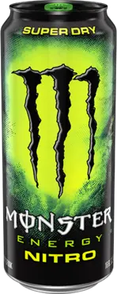
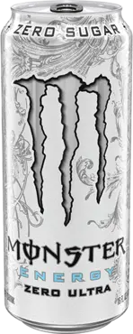
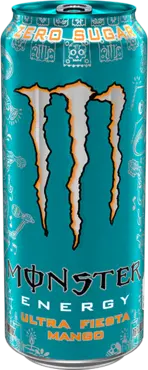

A Monster Energy egy világszerte ismert és népszerű energiaital márka, amelyet 2002-ben
vezettek be az Egyesült Államokban.
Az ital eredeti receptje és koncepciója az ausztráliai Hansen
Natural
Corporation (ma már Monster Beverage Corporation) nevéhez köthető.
A cég ambiciózus vállalkozása volt
megteremteni egy olyan energiaitalt, amely különbözik a meglévő termékektől, és vonzó lesz a fiatal
felnőttek és sportolók számára.
A Monster Energy megjelenése forradalmasította az energiaitalok piacát,
és
gyorsan népszerűvé vált a fiatalok körében. Az ital erős koffeintartalommal és egyéb energiafokozó
összetevőkkel rendelkezik, amelyek segítenek növelni az éberséget és az energia szintjét.
Emellett a
Monster
Energy egyedi kialakítása, például feltűnő csomagolása és dizájnja is hozzájárult a márkához fűződő vonzó
képhez.
A Monster Energy a sportesemények, zenészek és extrém sportok támogatásával építette fel
hírnevét és
népszerűségét. A termék világszerte elérhető, és sok országban kapható.
Az energiaital fogyasztása
ösztönzi
az éberséget és a teljesítményt, és ideális választás lehet azok számára, akik extra energiát és motivációt
szeretnének az aktív életmód vagy a mindennapi kihívások során.
A Monster Energy egy olyan ital, amely
segít
felpörgetni a napot és támogatja az élénk, dinamikus életstílust.
Legyen szó edzésről, munkáról vagy
szórakozásról, a Monster Energy azért áll, hogy segítse a felhasználókat abban, hogy kihozzák a legtöbbet
magukból.

Monster

- 

- 

- 
Classic
Tépj fel egy doboz Monster Energy-t, a bolygó legkeményebb energiaitalát.
Ideális kombinációja a megfelelő összetevőknek, a megfelelő arányban: a Monster gondoskodik
róla, hogy elvégezd a munkát.
A Monster energiaital íze intenzív, de harmonikus.
Sportolók, zenészek, anarchisták, diákok, utcai harcosok, metálosok, geekek, hipszterek és
bringások imádják - te is imádni fogod!
Nitro
A Monster Energy Nitro Super Dry a
Monster klasszikus
energiakeverékét tartalmazza, amely megadja a szükséges lökést. A különlegességét a
klasszikushoz képest a Super Dry dinitrogén-oxiddal átitatott sima, citrusos íze hozza létre,
könnyű és száraz textúrájával, amely hasonlít a finom pezsgőhöz, amely jobban átélhető, mint
elmagyarázható. Engedd szabadjára a Nitro Beast-et!
Classic
Zero
szoveg szoveg szoveg szoveg
Ultra White
Van,
akinek nem lehet a kedvében járni. Amint megkapják amit kívántak, máris mégtöbbet akarnak.
Sportolóink és a Monster lányok is ilyenek...az utóbbi időben tettek pár megjegyzést. Egy új
Monster italt kértek tőlünk, amely kevésbé édes, könnyedebb izű zéró kalóriával, mégis ugyanúgy
felpörget, mint a többi monster ital. Igen, a fehér az új fekete. Megérkezett a Monster Energy
Ultra.
Ultra Paradise
szoveg
szoveg szoveg szoveg
Ultra Viola
szoveg
szoveg szoveg szoveg
Rehab Limonsde
szoveg
szoveg szoveg szoveg
Ultra Mango
szoveg
szoveg szoveg szoveg
lablec